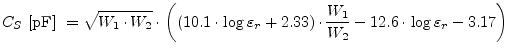
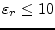
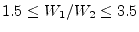
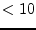
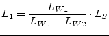
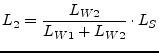
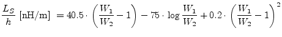

|
(11.205) |
The equivalent circuit of a microstrip impedance step is the same as for the microstrip corner (figure 11.4). The values are according to [38]:
|  | (11.202) |
for  and  the error is %.
|  | (11.203) |
|  | (11.204) |
with
|
(11.205) |
|  | (11.206) |